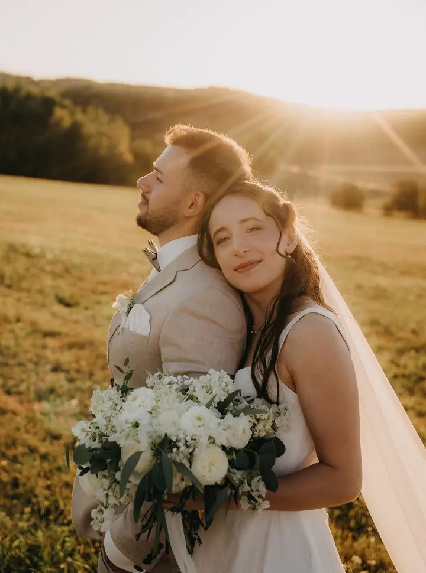
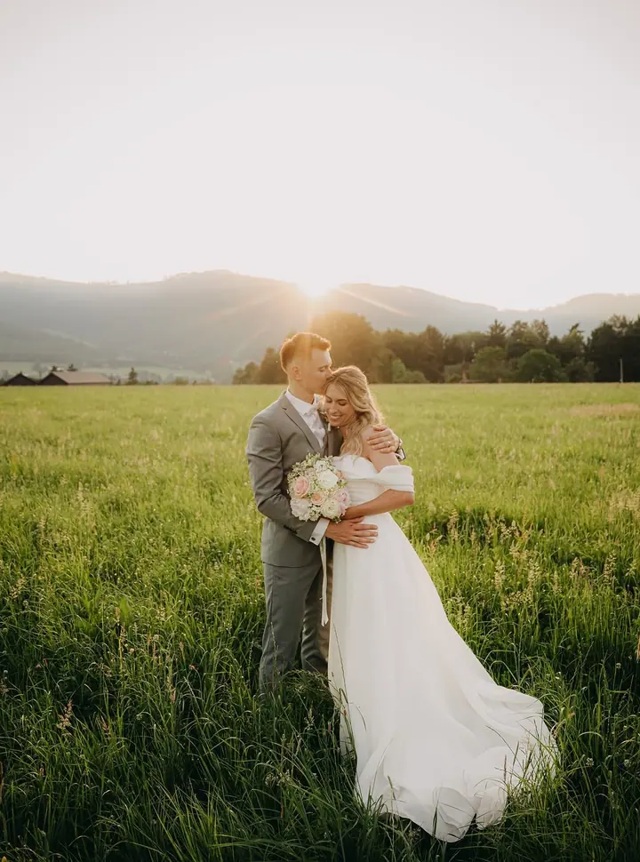
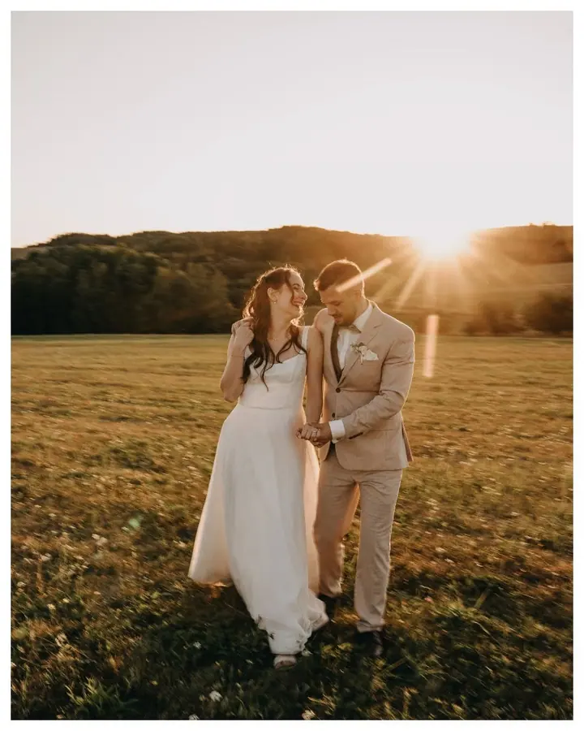
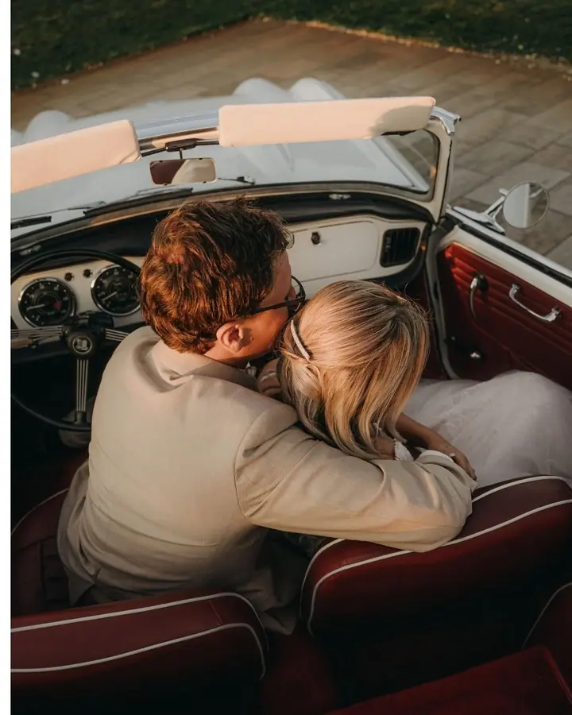

jedna
Svatby
Zachytím vaše emoce, prožitky a celkovou atmosféru dne, který vám bude vždy připomínat zlomové okamžiky vašeho života. V hlavní sezóně od dubna do října fotím svatby od 6 hodin, cena začíná na 19 000 Kč.

Svatební a rodinná fotografka · Hranice na Moravě, celá Česká republika, zahraničí

Jmenuji se Kristýna Králová a jsem svatební a rodinná fotografka z Hranic na Moravě. Fotím svatby, rodiny, miminka i portréty a ráda s vámi vytvořím vzpomínky, které nezestárnou. Dojedu kamkoli, kde se cítíte dobře.
Více o mně
Co fotím
jedna
Zachytím vaše emoce, prožitky a celkovou atmosféru dne, který vám bude vždy připomínat zlomové okamžiky vašeho života. V hlavní sezóně od dubna do října fotím svatby od 6 hodin, cena začíná na 19 000 Kč.
dvě
Zhruba hodina společného focení venku nebo v interiéru, i s dětmi a sourozenci. Z online galerie si vyberete fotky a 5 z nich dostanete vytištěných v obálce, kterou sama vyrábím.
tři
Portrét dospělého nebo dítěte v přírodě, v interiéru nebo v ateliéru. Ke focení je možné domluvit i líčení a úpravu vlasů.
Novorozence fotím do 12. dne od narození, v ateliéru nebo u vás doma, klidně i s celou rodinou. Těhotenské focení je možné i s partnerem nebo s dětmi.
Čekám na okamžik plný emocí.

Za objektivem
Jmenuji se Kristýna Králová a jsem z Hranic na Moravě. Z koníčku se postupně stala práce, ale hlavně práce, která mě baví a naplňuje. Jsem ráda, že můžu být součástí vašich neopakovatelných momentů.
Ve focení nehledám žádnou složitost. Přes objektiv čekám na okamžik plný emocí, abych mohla zmáčknout spoušť a uchovat ho napořád. Nejraději fotím venku v teplém večerním světle, ale ráda vás vyfotím i v ateliéru nebo u vás doma.
Na svatbu za vámi přijedu klidně kamkoli po České republice, a když bude potřeba, tak i do zahraničí. K rodinnému focení patří i 5 vytištěných fotek v obálce, kterou vyrábím vlastníma rukama.
Kristýna
Pošlete mi e-mail se základními informacemi. U svatby hlavně datum a místo konání, u miminka ideálně ještě během těhotenství.
Společně probereme, co si od focení přejete, kde budeme fotit a jestli chcete domluvit líčení a úpravu vlasů.
Běžné focení trvá zhruba hodinu, svatby v sezóně fotím od 6 hodin. Nic nehraju na složitost a čekám na chvíle, které jsou opravdové.
Do online galerie vám pošlu hrubý výběr, ze kterého si vyberete fotky k úpravě. Hotové fotky dostanete v plné kvalitě elektronicky a vybrané i vytištěné v obálce, kterou sama vyrábím.
Portfolio
Otázky
Svatby fotím od 19 000 Kč. V hlavní sezóně od dubna do října fotím svatby od 6 hodin, kratší svatbu je možné nafotit mimo sezónu nebo ve všední dny kromě pátku. Přijímám objednávky na rok 2027.
Miminka fotím do 12. dne od narození, proto se ozvěte nejlépe už v těhotenství nebo mi napište z porodnice. Když se objednáte až po porodu, nemohu zaručit volný termín.
Fotky z běžných focení mám zpracované do 10 pracovních dní, u svatby je to individuální. Neupravené fotky ani RAW soubory neposkytuji.
Ano. V okolí Hranic do 15 km je doprava zdarma, dál účtuji 8 Kč za kilometr. Na svatbu přijedu kamkoli po České republice, a když bude potřeba, tak i do zahraničí.
Napište pár vět o tom, co si představujete. kristynakralova93@gmail.com